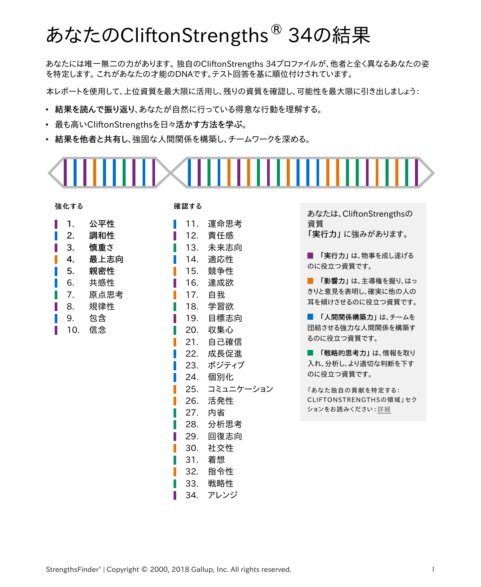
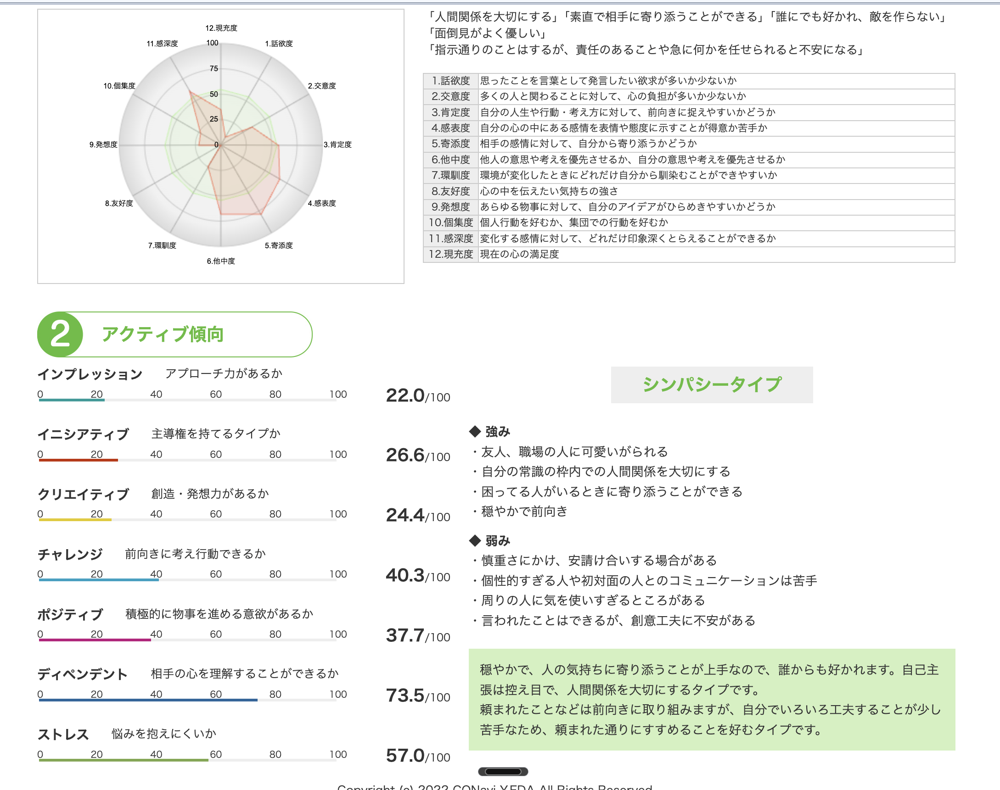

目次
01 まずひとことで
まず、ひとこと で
自分の事、わかっているようで意外と何も知らないのかも。— ひーさん・セッション前夜のDM（2026-08-15 23:49）
ひーさん（ひー＠【朝活】宿題リスト／イルカ会員）は、兵庫県出身・大阪府在住の会社員。メーカーの出荷部門で、4拠点のうち1拠点の出荷工程をまとめる立場。ご家族は妻さん・3歳長女・2歳次女・1歳長男と、ラグドールの猫さん。2025年5月7日入会。育休中に『お金の大学』を手に取り、「将来のお金、このままで大丈夫か」と考え始めた、とご自身で書いています。
依頼を決めた理由を、ひーさんはこう話してくれました。「おけもんさんのプロフィールを見て、なんか同じような感じやなっていうのがちょっと思って……この人やったらっていうのが直感的にピンときて」（05:37）。ADHDの特性や生きづらさが重なって見えた、という直感からの依頼だったそうです。
そして最初に打ち明けてくれたのが、「仕事や友人関係では自分の感情を全面には出せない」「否定されたらどうしようという自分のストッパーがかかって、会議で意見を言うのが怖いレベル」（06:45）ということ。以前はそれでも良かったけれど、今の役職になってから露骨に出はじめている、と話していました。
02 今日の会
今日の会で、起きたこと
Gallup公式の型（理解する→受容する→活用する）で進めました。コーチが答えを埋めるのではなく、ひーさんが選んだところを深掘る60分でした。
前半
いまの環境を聞く。 朝活・転職検討中であること、以前は間に立ってくれる人がいたが今は自分がその役になっていること（10:20／14:57）、否定される怖さ（06:45）を話してもらいました。
中盤
資質を1つずつ照らす（Name→Claim）。 慎重さ・信念・公平性/規律性・親密性の順に、レポートの説明とご自身の経験を突き合わせました。「まさにそうであって」「確かに合ってるな」という言葉が何度も出ました。
後半
いまの悩みへ橋渡し（Aim）。 報告が苦手なこと、集中できていないこと、調和性の悩みを扱い、最後に1ヶ月後の目標を3つ、ご自身の言葉で置きました。
受容する（CLAIM IT!）——もう、助けてきた資質
Gallup公式の「受容する！」は、資質を思い出すだけでは終わりません。行動に表れた自分の才能を認識し、感謝する ところまでがワンセットだと言われています。ここは指摘ではなく、もう起きている事実 だけを置いておきます。
転職して10年。「周りと比べると、頼りにされてるな、任してもらえてるな」と感じながら（10:20）、4拠点のうち1拠点の出荷工程をまとめる立場を任されてきました。朝活の宿題リストは今日で200日を超え、「続けるのすごいね」とご家族から言われている、とも話してくれました（39:47）。
偶然ではなく、公平性・規律性・信念といった上位資質が、もうずっとひーさんを支えてきた側の証拠です。公式の問いをひとつだけ置いておきます——「この資質が、過去、あなたの成功に役立ったのはいつですか？」 今日話してくれたこと以外にも、思い出したら足していってください。
03 34の地図
34の地図
Gallup公式レポート（受験日表記 08-09-2026）。1位公平性〜34位アレンジ。領域は実行力4／影響力1／人間関係構築力4／戦略的思考力1（TOP10）。
影響力1・戦略的思考力1という数字は、「影響力が無い」「戦略的に考えられない」という意味ではありません。Gallup公式も「あるドメインに上位資質が少なくても心配いりません。誰もが物事を成し遂げ、影響を与え、関係を築き、情報を処理します。別のドメインの強い資質を使って、同じ結果に到達しているだけです」と言っています。ひーさんの場合は、実行力・人間関係構築力側の資質（公平性・慎重さ・調和性・親密性など）が、その役割を担っている、という読み方です。
CliftonStrengths 34（レポート1ページ目・宛名は非表示）

1 公平性 実行力 公平な審判 / Consistency
同じルールで、同じ扱いを大事にする。
2 調和性 人間関係 平和の使者 / Harmony
対立より、合意点を探す。
3 慎重さ 実行力 石橋を叩く人 / Deliberative
話す前に、聴いて考える時間が要る。
4 最上志向 影響力 磨き続ける職人 / Maximizer
量より質。良いものを、もっと良く。
5 親密性 人間関係 ベストフレンド / Relator
広く浅くより、1対1の深さ。
6 共感性 人間関係 感情の通訳 / Empathy
場の温度を、先に感じ取る。
7 原点思考 戦略的思考 歴史家 / Context
いまを読むために、経緯を置く。
8 規律性 実行力 秩序の建築家 / Discipline
構造と順番があると、力が出せる。
9 包含 人間関係 輪を広げる人 / Includer
外にいる人を、輪の中へ。
10 信念 実行力 揺るがない芯 / Belief
生きるに値する目的があると進む。
資質ひとつひとつ、詳しく（TOP10）
💗の中は、セッションで実際に交わした言葉です。当日は扱わず、まだ本人の言葉で確かめていないところは「確かめていません」のまま残しています。
どんな人？
個人の要望よりも、グループ全体のニーズに関心がある。公平性を重視し、誰に対しても同じ基準で接する人。明確なルールや手順があると安心する。
自然な動き
違いをなくして、みんな同じ状況を作り出すことに努める。規則や方針を決めて、予測しやすい職場や環境を作ることが得意。平等な扱いで信頼を得る。
💗 セッションでの本人の言葉
「明確なルール手順があると安心してても抜群ですね」（42:24）。一方で「ただこう自分から作っていくのがすごい苦手っていうね。与えられたのを淡々とこなすのはすごい好き」（同）とも。人によって残業時間が違うことは「気にはなりますね」とはっきり言っていました。
🌿 公式のBring / Need
💛 Gallup公式 Bring / Need
Bring：文化の予測可能性を高めるルールと方針 Need：標準的な手順 🍃 地図のヒント（図解）
好き：手順が定まっていること、同じ方法で繰り返せること、誰もが従えるルール、平等な扱い 消耗しやすい：特別扱いや例外、人によってルールが変わること、不公平・不透明な評価
どんな人？
穏やかな人。対立よりも合意点を探そうとする。全員が納得できる道を見つけることに満足感を覚える。争いごとを避け、調和のとれた環境を好む。
自然な動き
逆立った羽を滑らかにするように、異なる意見を調整し平和的な問題解決をもたらす。対立を避け、共通点を見出すことで協力関係を強化する。
💗 セッションでの本人の言葉
「基本的に対立はしないので……話し合いの場で自分の意見が言えない、求められた時もなかなかうまく表現できない」（01:12:44）。詳しくは §06「調和性の使い方」で扱いました。
どんな人？
潜在的なリスクに常に警戒し、決定する前に細心の注意を払う。安全を確保するために十分な準備と確認を行い、慎重に判断を下す人。
自然な動き
真っ先に危険や課題を考え、リスク評価と事前準備を徹底する。深い配慮と計画性で周囲に安全な環境と安心感を提供する。
💗 セッションでの本人の言葉
いちばん強く反応した資質でした。「時間かけて慎重に考えてから動いちゃうっていうのは、まさにあの……忘れてるんちゃうか、行動が遅いとかっていうのは結構見られがちで、もうそう見られてるんじゃないかな」（20:13）。おけもんへの依頼も「2週間ぐらいは調べて」から決めたと話してくれました（22:28）——これはリスクを潰す実行力です。
そして興味深いことに、CQ診断票にある「慎重さに欠け、安請け合いする場合がある」にも、ご本人はうなずいています。「最近そうですね。慎重さにかけるなって最近本当思いますね……つい先日も確認不足のミスがあったりして」（25:03）。どちらも本物で、場面によって出方が違う ということが、この60分でいちばんはっきりした発見でした（続きは §05）。
どんな人？
卓越したものにコミットする。「良い」で満足せず「最高」を追求する。強みを見出し、それを磨き上げるのが得意。質と効率にこだわり、常に改善の余地を探している。
自然な動き
強みに集中し、弱みにうまく対処する。質へのこだわりを持ち、個人や集団の卓越性を高め、効果を最大化するための手段を常に追求する。
💗 ひーさんの場合
宿題リストを200日間、つぶやきで残し続けている姿は、「こなす」より「磨く・やり切る」側に見えます。仕事の場でこの資質がどう評価されているかは、今日は深掘りできませんでした。
どんな人？
誠実で信頼される人柄。限られた人との深いつながりを大切にし、お互いの本音や価値観を共有することで満足感を得る。一度信頼関係を築いたら長く続く絆を持つ。
自然な動き
1対1の関係を大切にし、相手の内面まで深く理解しようとする。強い信頼関係を基盤に目標達成に向けて協力し、チームに安定感と一体感をもたらす。
💗 セッションでの本人の言葉
「人見知りですし、初対面の人にこっちから喋りかけられてもちょっと全然無理……相手から歩み寄ってくれて息が合ったら全然喋れる」「職場は全く自分のこと喋らない……家帰ってから家族と喋るのが1番オープン」（30:34〜32:45）。今日、初対面のはずのセッションでとても話しやすかったのは、コーチ側からの歩み寄りが効いていた可能性があります。
どんな人？
場の空気や人の気持ちに敏感で、感情豊か。他者の感情や状況を察知するアンテナを持ち、周りの感情の変化に自然と反応できる人。
自然な動き
相手の感情をよく察して対応を変える。言葉にされていない気持ちを汲み取り、寄り添うことで他者との信頼関係を構築できる。
💗 ひーさんの場合
子どもの頃から「人の顔色を見て行動するタイプ」（16:21）。ミスをして怒られないか、上司の目が気になる、という語りにこの資質が重なって見えます。今日はここを単独では深掘りしていません。
どんな人？
過去や歴史を大切にする人。前任者の経験や歴史的背景を理解することで、現在の状況をより深く理解できると考える。「なぜそうなったのか」という経緯に強い関心がある。
自然な動き
歴史や体験談を調べる。過去の知識や経験を活用して現在の問題解決に役立てる。組織の中で「なぜそうなったのか」を説明し、過去から学んだ教訓を伝える。
💗 ひーさんの場合
育休→『お金の大学』→入会、という順番をプロフィールに残している。今日は本人の言葉で確かめていません。
どんな人？
計画的で秩序を大切にする人。スケジュールを遵守し、整理整頓が得意。安定した日常や、誰もが従える明確なルールや手順を求める。
自然な動き
ルール・スケジュール順守で混乱を防止する。計画を立てて効率よく管理し、周囲に一貫性と安定感を提供する。
💗 セッションでの本人の言葉
「レールが敷かれてるのはすごい好きです……この通りに行ったらもう間違いないやんていうレールまで敷いてくれてるんでね、すごいそこはありがたい。あとは自分がやるかやらんかだけ」（45:40）。仕事でも「上司はもうパーフェクト模範みたいな人……そこの真似をするともう間違いない」と、いい手本があると力が出ることを自分で言葉にしていました（47:52）。
どんな人？
除外への感度が高く、誰かが仲間はずれになっていないか常に気にする。多様な人を受け入れ、誰も取り残されないよう気を配る人。
自然な動き
孤立した人を見つけて輪に入れる。誰もが参加できる環境を整え、新しいメンバーを温かく迎え入れる。メンバー全体を巻き込むリーダー役になる。
💗 ひーさんの場合
プロフィールに「気軽に絡んでほしい」と書いています。今日は本人の言葉で確かめていません。
どんな人？
大切な価値観には強いこだわりがあり、絶対に妥協しない。人生の意味や目的を見つけることに重きを置き、その信念に基づいて行動する人。
自然な動き
大切なことのためなら、多少の犠牲もいとわない姿勢を持つ。安定感や明確な方向性、確かな信念を周囲にもたらす。
💗 セッションでの本人の言葉
「自分で決めたことはやっぱりある程度やり切りたい」（34:15）。宿題リストは2026年1月から200日間継続し、その途中経過を欠かさずつぶやいてきました。「途中でやめたくないっていうのも出てくる性格」（39:47）。「聞くは一時の恥、聞かぬは一生の恥」を好きな言葉に選んでいるのも、この資質と地続きに見えます。
11–34 確認する（今日は撫でない）
11 運命思考12 責任感13 未来志向14 適応性15 競争性16 達成欲17 自我18 学習欲19 目標志向20 収集心21 自己確信22 成長促進23 ポジティブ24 個別化25 コミュニケーション26 活発性27 内省28 分析思考29 回復志向30 社交性31 着想32 指令性33 戦略性34 アレンジ
CQ 個性診断
シンパシータイプ ——試して乗ってみた仮説能力判定ではありません。診断票の言葉も、答えではなく地図です。
CQパーソナリティ診断（DM添付実物）

◇ 診断票の強み欄
友人・職場の人に可愛いがられる
自分の常識の枠内で、人間関係を大切にする
困っている人に寄り添える
穏やかで前向き
◇ 診断票の弱み欄（決めつけない）
慎重さに欠け、安請け合いする場合がある
個性的すぎる人・初対面との会話は苦手
周りに気を使いすぎる
言われたことはできる。創意工夫に不安がある
7つのアクティブ指標（OCR確定）
ディペンデント相手の心を理解することができるか
73.5
▼ 診断票の輪郭
シンパシータイプ
「穏やかで、人の気持ちに寄り添うことが上手なので、誰からも好かれます。自己主張は控え目で、人間関係を大切にするタイプです。頼まれたことは前向きに取り組みますが、自分でいろいろ工夫することが少し苦手なため、頼まれた通りに進めることを好む」——診断票の一文です。人物規定ではありません。
セッションで確かめられたこと
ストレングスは慎重さ3位 。CQの弱み欄は「慎重さに欠け、安請け合いする場合がある」。セッション前は「どちらの場面でどちらが出るか」を問いのまま置いていましたが、ご本人は両方に「そうですね」と答えました（20:13／25:03）。矛盾ではなく、場面によって出方が変わる ——そして「最近、慎重でない場面が増えている」自覚まで話してくれました。その理由につながる発見は §05 にあります。
04 力が出る条件
力が出る条件・消耗する条件
◇ 力が出やすい方向（セッションで確認できた）
明確なルール・手順がある（「安心してても抜群」42:24）
いい手本・レールがある（「もう間違いないやん」45:40）
1対1で、信頼できる相手と話せる（30:34）
自分で決めたことを、節目から始められる（34:15〜37:12）
◇ 消耗しやすい方向（セッションで確認できた）
ゼロから自分でルールを作らないといけない（42:24）
報告の場で、意見や理由をその場で言葉にする（01:01:33）
上司の目が気になり、行動の前にブレーキがかかる（17:41）
予定通りに進まない日が続く（01:05:59）
REFRAME
「自分から作っていくのが苦手」「0から生み出すより、決められたことをしっかりやる方が力を発揮しやすい」——これは欠けではありません。ご本人が「レールが敷かれてるのはすごい好き」と自分で言葉にしたとおり、いい模範を見つけられれば伸びるタイプ です。CQ診断の「クリエイティブ（創造・発想力があるか）」が7指標の中では低めの数値だったのも、弱みということではなく、単に自然には出てこない形 というだけで、同じ地図の一部として説明がつきます。
BALCONY / BASEMENT — Gallup公式の考え方
Gallup公式に、資質には2つの出方があるという考え方があります。Balcony（バルコニー） ＝その資質の良い出方。Basement（地下） ＝誤用や、意欲が落ちた時の出方——「潜在的な脆弱性」です。下位の資質だけでなく、上位の資質にも地下はある 、というのが公式の考え方です。
慎重さは、いちばん強く反応した資質でした。「時間かけて慎重に考えてから動いちゃう」ことを、自分でも「行動が遅いって見られてるんじゃないか」と感じていて（20:13）、それでも「やらんまま終わっちゃう」のが怖くて「エイヤじゃないですけど、とりあえず申し込まないと」と自分を急かして動いた場面もある、と話してくれました（23:48）。これが、慎重さの地下に近い出方かもしれません。
公式の対処法は、「この資質を直す」のではなく「別の資質のバルコニー（良い出方）を出す」 ——"To avoid the basement of one theme, lean into another theme."（ひとつのテーマの地下を避けるには、別のテーマのバルコニーを出す）。慎重さを我慢させるのではなく、別の資質に助けてもらう、という発想です。
🌿 どの資質に助けてもらうか——選ぶのはひーさんです
上位資質の中から、候補になりそうなものを2つだけ置いておきます。答えはここでは出しません。
信念 ——「自分で決めたことはやっぱりある程度やり切りたい」（34:15）。迷いが長引きそうな時、「もう決めたことだから」で背中を押してくれるかもしれません。規律性 ——「レールが敷かれてるのはすごい好き」（45:40）。慎重さがぐるぐる回りそうな時、先に「手順」や「締め切り」を決めてしまうと、迷う前に動ける可能性があります。
どちらか、両方、あるいは別の資質でもいい。慎重さが「直すもの」になっていないかだけ、たまに確かめてみてください。
05 自分で見つけたこと
ひーさんが、自分で見つけたこと
ここはコーチが指摘したことではありません。ひーさんが自分の言葉で辿り着いた場所です。
発見①：心理状態が会話を左右している
職場の報告について、「反応が非常に悪いって言われて……なんか詰められても返せない……そういうのが回って余計しんどい」と話したあと、コーチから「今こうお話ししてる感じとすごい聞き取りやすくて、ゆっくり落ち着いてお話してくださってる印象なんですけども、何が違うんでしょうね」と聞かれ、こう答えました。
「すごい身構えていっちゃいますね。基本的に怒られると思っていってます、もう最近」（01:01:33）。職場と今日とで違うのは、話す技術ではなく心理状態そのもの ——という気づきです。
発見②：真似できない理由は、集中できていないこと
身近にいる尊敬できる上司を模範にしたい、と話した直後、「いい手本がね、身近にいるのになんかね、真似できない……自分の力を呼ばずっていうところが最近本当ひしひしと感じてる。真似したいんだけど真似できてない。そこが悔しい」と続けました。
コーチが「できてる時とできてない時は何が違うんでしょうね」と聞くと、少し考えたあとにこう言葉にしました。「なんか集中できてないような気がします……あの、なんかやっぱ転職で逃げたいっていう気持ちがどちらにあるんやと思います。だからなんか100%仕事に注力できてないというか」（01:09:49〜01:11:22）。転職を考えていること自体が、いまの仕事への集中を削っている ——ご本人がその場で気づいた瞬間でした。
06 調和性の使い方
調和性の使い方
「意見が言えない」という悩みに、コーチ自身も調和性1位（=最下位）であることを明かしたうえで答えました。
「調和性自体は、対立を嫌うとか合意点を探すっていうこととイコールで、全員が自分の意見を押し殺して相手に従うっていう資質ではなかったりするんです。目的は、合意点とか、みんなが納得して平和の中で物事が進んでいくかどうか」（01:14:37）。
そのうえでの提案は、正面から意見を通すことではなく、相手の希望を引き出す交渉やヒアリングの力を使うこと 。「自分だけじゃ無理だったら味方に相談して作戦を立てる」「今はAIがあるから、AIにやり方を考えてもらう、交渉のシミュレーションをするっていうこともできる」（01:16:54）。
ひーさんの受け取り方は明快でした。「自分で絶対意見言わなあかんかって言ったら、そうじゃないんやなっていうのと、引き出す力ってのはやっぱ大事やなって思いました」（01:18:05）。そのうえで「話し方とか伝わり方とかって色々あると思って……今まで本を読んでないなって今思ったんで、そういうところに時間を使った方がいいなって思いました」（01:20:29）と、自分で本を読む行動を決めました。
07 推薦書
次に読む3冊
コミュニケーションにコンプレックスがあったおけもん自身が実際に読んで効いた本として、セッションの終盤で紹介した3冊です。
① 『人を動かす』D・カーネギー
「自分が喋るんじゃなくて、相手の要望とか相手が何を求めてるかを満たしてあげたら人間関係はうまくいく」——調和性・親密性のどちらにも効く一冊。
② 『君のアンリミテッド』わ部さん
実例（お笑い芸人の関係の築き方）に沿って、質問の仕方・話の深掘り方が具体的に書かれた聞き方の本。
③ コミュニケーションの達人の思考法（ベストセラー）
「仕事のできる人がどんなことを考えながら話しているか」を扱った本。冒頭の「奥さんに服の色を聞かれたら、どっちかじゃなく“なんでそう思ったの？”と聞く」というエピソードが紹介されました。
08 1ヶ月後の目標
1ヶ月後の目標 （優先順位つき）
「1ヶ月後にまたお話しする機会があったら、何を話せてたら“進んだやん”と思えそう？」という問いへの答えです。優先順位もご自身が決めました。
🥇
転職活動を進める（最優先）
「通勤時間もやっぱりちょっと長いなあっていうのもあって、ここ短縮できたらもっと家族の時間増やせれるのになとも思ったりもしてる」（00:59:02）。起業は「自己資本もないし、現実的じゃない」と自分で判断済み。「転職活動自体はリスクないですから……絶対決めなあかんっていう力味はせんでもええな」（01:00:16）——リスクのない前向きな行動 として位置づけています。
②
声を発信するプラットフォームで活動を始める
「顔出すのは恥ずかしいなとかもあるんで、でも声は生かしたい」（51:50）。段取りも本人がすでに決めています。「いきなりライブしても多分何も喋らへんやろな……ボイスサンプルでもないですけど、そういうの取って、ちょっとずつ発信していく……一定期間、1週間にこの曜日は絶対やる、という形」（55:22）。
③
現職の環境を改善する
「コミュニケーション関連の書籍を1冊読み実践する」ことで、報告・意見表明の負担を減らす。§06・§07とつながっています。
09 自分で決めたこと
あなたが8/16に、自分で決めたこと
ここから先を埋めるのはひーさんです。行動をこちらで決めてしまうと、それはもう本人の決定ではなくなるので、中身はあえて書いていません。優先順位も、8/16にご自身が並べた順のままです。
🥇 転職活動を進める（最優先）
「通勤時間もやっぱりちょっと長いなあっていうのもあって……転職活動自体はリスクないですから」（00:59:02〜01:00:16・本人の言葉）
書き込むときの目安は1つだけ——あとで自分で「できた」と判定できる形になっているか。
② 声を発信するプラットフォームで活動を始める
「いきなりライブしても多分何も喋らへんやろな……ボイスサンプルでもないですけど、そういうの取って、ちょっとずつ発信していく」（55:22・本人が決めた段取り）
書き込むときの目安は1つだけ——あとで自分で「できた」と判定できる形になっているか。
③ コミュニケーションの本を読んで実践する
「今まで本を読んでないなって今思ったんで、そういうところに時間を使った方がいいなって思いました」（01:20:29・本人が立てた方針）
書き込むときの目安は1つだけ——あとで自分で「できた」と判定できる形になっているか。
見返すタイミングだけは決めてあります。無料のアフターフォロー1回を、この3つの答え合わせに使えます。それまでは、書いたことをただ置いておくだけで大丈夫です。
セッションの記録
セッションの記録
当日の様子をYouTube限定公開で保存しています。URLを知っている人だけが見られます。振り返りたくなったら、いつでもここから見返せます。
VIDEO
再生できない場合は https://youtu.be/1IMbfW4b49o を直接開いてください（限定公開）。
CLOSING
「普段話せない悩みを第三者に聞いてもらって、気持ちが楽になった。もっと時間があるなら2時間でも3時間でも喋りたい 」